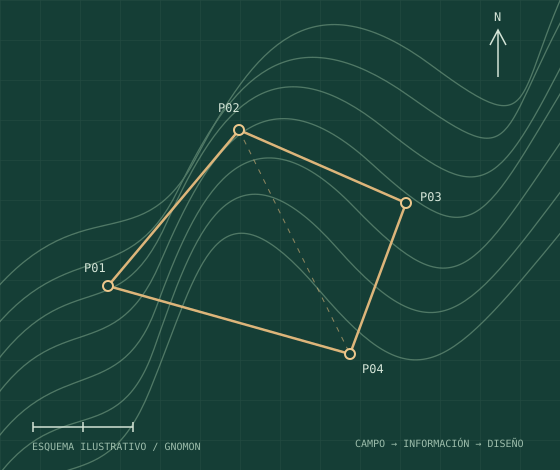

Servicios topográficos
Levantamientos, replanteos, nivelación y control. Define el alcance y los entregables con GNOMON.
Ver serviciosTOPOGRAFÍA · INGENIERÍA · TECNOLOGÍA
Servicios topográficos y herramientas digitales para convertir la información de campo en planos, diseños y entregables claros.

ÁREAS DE TRABAJO
Desde la medición hasta la producción de planos: encuentra el apoyo que necesitas en cada etapa.
Levantamientos, replanteos, nivelación y control. Define el alcance y los entregables con GNOMON.
Ver serviciosPaquetes Civil 3D, rutinas LISP, flujos Dynamo y una app para nivelación en campo.
Explorar tiendaPróximamente en Ibagué. Un espacio para la verificación de equipos, procedimientos y reportes técnicos.
Conocer el laboratorioGNOMON TOPOGRAFÍA
Trabajamos con topógrafos, ingenieros y constructores en Colombia, integrando servicios técnicos y desarrollo de herramientas digitales.
Organización de datos, producción de planos y automatización de tareas: recursos para un flujo de trabajo más claro.
Conocer GNOMON ↗ACTUALIDAD Y HERRAMIENTAS
Rutinas para organizar vértices, cuadros, capas y textos. Todas las herramientas se entregan en un solo paquete.
Conocer el paquete ↗La app de GNOMON para cálculos de nivelación, replanteo y pendientes. Disponible en Google Play.
Conocer la app ↗Placa Huella V1, V2 y Vías en Adoquines: plantillas, archivos PKT y rótulos para apoyar el diseño.
Explorar los paquetes ↗TRABAJEMOS JUNTOS
Comparte el alcance y los entregables que necesitas. Te ayudamos a definir el siguiente paso.